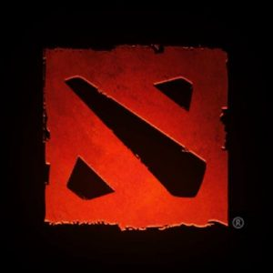

Dota2 is a MOBA (multiplayer online battle arena) video game on PC release on Steam on July 9, 2013. Dota2 is played between 2 teams of five players, with each team occupying and defending their own separate bases on the map. Each of ten players independently controls one powerful character, known as a “hero”, with unique abilities and different styles to play. During each match, players collect experience points and items for their own heroes to successfully battle the opposing team. As the match goes on, they need to update or change to more powerful in-game items to boost their capabilities.
In this game, it is crucial to choose the proper items different heroes at the correct times. When choosing items, players need to take a large number of factors into consideration, including but not limited to the current game stage, the heroes in the opposing team, whether they are at an advantage, and the exact strategy the team is executing, e.g. attacking or defending. Selecting the most suitable items could definitely maximize the possibility to win the game.
Goals
Our primary goal is to utilize the trained model to recommend most useful items as well as their buying order according to the hero selection in both camps and the winning strategy. If possible, we’d like to design an auxiliary system which not only recommends items before the game starts but also dynamically recommend the most suitable items according to the different condition.
Motivation
Despite the game dynamics and high complexity in choosing items, currently Dota2 adopts a static item recommender system that suggests hard-coded best-suitable items for heroes based purely on their personalities. The official item recommendations for heroes can be found on [2], however the static approach is limited in the following aspects:
- The current recommender system disregards any other dynamic factors in a game, such as hero selection and item combinations of both camps, which might significantly determine key items for certain heroes.
- The manual efforts of maintaining a static recommendation table need to be updated repeatedly with version changes, gaming strategy evolutions, etc.
In academia, research efforts are majorly devoted to machine learning techniques for Dota2 results prediction through mining game replay data[3], analyzing team drafts[4] or modeling heroes and items[5]. However, few are proposed for item recommendations purposes.
Core Algorithm
Therefore, we propose to automate the recommending process and enhance the recommendation accuracy by leveraging IR and Machine Learning techniques. The target recommender system will take selected statistical match history data from various sources such as Dota2 Web API, OpenDota as input. Through mining and analyzing data, such as analysis of co-relevance between the winning probability and item-hero combinations, D2Rec would be able to generate much more accurate item recommendations on-the-fly while totally avoiding manual maintenance. We summarize the primary outcome of D2Rec as a model, trained by recent gameplay data from professional matches, that could recommend most useful items as well as their buying order. By examining the winning probability of the same or similar hero cast with our recommended items, the system can be comprehensively evaluated.
Haghighat et al. [1] applied data mining approaches to predict game results in sports games based on features gathered from past games. They selected features using a combination of techniques and fed the training data to machine learning frameworks. We plan to employ similar techniques, using in-game items as primary features to train our model.
Existing Resource
Various web APIs from both Dota2 official and other third party organizations have been discovered that might serve as out data sources, such as OpenDota. Due to the popularity of the game, a lot of wrappers in different programming languages have also been developed. As we are majorly using Python in CSCE 670, we plan to adopt the Python Dota2 API. The detailed data format of the information returned by the get_match_details API could be find in the Appendix.
Evaluation
A comprehensive evaluation of D2Rec accuracy is difficult due to the complexity and dynamic feature of Dota2. An intuitive validation approach of D2Rec system is to apply the recommended items on heroes and do matches with the same configuration repeatedly. Then the correctness of recommendations can be easily evaluated by analyzing the match statistics like per-hero performance and overall winning rate. However, though we have access to data over 2.7 billion matches, several challenges exist:
- Low-quality matches: usually in Dota2 and any other RTS, a considerable portion of matches are considered meaningless due to early-quit, player number inequality, etc. These games are considered irrelevant and will be filtered out.
- Version evolution: Dota2 has been upgraded, lots of rules and heroes have been added or modified over time, therefore not all historical match data are meaningful for making recommendations in the current version.
- Early game vs. late game: To avoid recommending late-game items to heroes during the early game or vice versa, we might also need to apply game duration filters, e.g. to select relatively long games only.
- Match uniqueness: no matches are the same. Player dynamics and other random factors would influence the match significantly. Therefore, it’s non-trivial to evaluate the winning rate of a specific hero-item combination.
Apparently, by selectively adopting match data the first three challenges may be solved. For example, only use high-quality and recent match data (all records after a significant version update), the first two challenges can be resolved. However, deliberate filtering process should be applied, details such as the definition of match quality are still open to discussion. Different from traditional recommender system, which may use definitive labeled data from real users to evaluate the recommendation effectiveness, in our case we may calculate winning rate in matches that’s the same or highly similar in terms of item-hero combination for evaluation of the recommendation correctness.
References
[1] Haghighat, Maral, Hamid Rastegari, and Nasim Nourafza. “A review of data mining techniques for result prediction in sports.” Advances in Computer Science: an International Journal 2.5 (2013): 7-12.
[2] https://dota2.gamepedia.com
[3] Johansson, Filip, and Jesper Wikström. “Result prediction by mining replays in Dota 2.” (2015).
[4] Semenov, Aleksandr, et al. “Performance of machine learning algorithms in predicting game outcome from drafts in dota 2.” International Conference on Analysis of Images, Social Networks and Texts. Springer, Cham, 2016.
[5] K. Song, T. Zhang, and C. Ma, “Predicting the winning side of DotA2,” tech. rep., Stanford University, 2015.